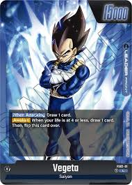

DragonBall Studios
Dragon Ball Z

Dragon Ball Z (DBZ) is a Japanese anime television series produced by Toei Animation.
Part of the Dragon Ball media franchise, it is the sequel to the 1986 Dragon Ball television series and adapts the latter 325 chapters of the original Dragon Ball manga series created by Akira Toriyama.
Dragon Ball Z continues the adventures of Son Goku in his adult life as he and his companions defend the Earth against villains including aliens (Vegeta, Frieza), androids (Cell), and magical creatures (Majin Buu).
At the same time, the story follows the life of Goku's son, Gohan, as well as the development of his rivals, Piccolo and Vegeta.
List of characters
- Son Goku:
-Half-Saiyan introduced as a young boy, Son Goku (孫悟空, Son Gokū) is depicted as immensely strong, pure of heart, and extremely competitive.
- Bulma:
-Bulma (ブルマ, Buruma) first appears as a teenager using the Dragon Radar, a device she created to detect the energy signal emitted by Dragon Balls.
- Krillin:
-Krillin (クリリン, Kuririn) is Goku's best friend and one of the most talented martial artists on Earth.
A monk who shaves his head for the sake of his training, he and Goku are under the tutelage of Master Roshi; initially his rival but later a friend, and a loyal companion in adventures thereafter.
- Piccolo:
-Piccolo (ピッコロ, Pikkoro) is the spawn of King Piccolo, created to get revenge on Goku in the wake of his death, and subsequently assumes the role as the "evil half" of Kami
- Son Gohan
-Son Gohan (孫悟飯) is Goku's eldest son with Chi-Chi, who first appears at the age of four.
He is kidnapped by Goku's brother, Raditz, and locked up in a space pod.
- Vegeta
-Vegeta (ベジータ, Bejīta) is the last prince of the Saiyan warrior people, and the fourth generation of the Saiyan royal bloodline to bear his namesake.


Character Profiles
- Goku
- Race: Saiyan
- Occupation: Martial Artist / Protector of Earth
- Abilities and Techniques: Kamehameha,Spirit Bomb,Super Saiyan forms
- Bulma
- Race: Human
- Occupation: Scientist, Inventor, CEO of Capsule Corporation
- Abilities and Techniques: Genius-level intellect, expert in mechanics, robotics
- Krillin
- Race: Human
- Occupation: Martial Artist, Police Officer
- Abilities and Techniques: Destructo Disc (Kienzan), Solar Flare (Taiyōken), Kamehameha
- Piccolo
- Race: Namekian
- Occupation: Warrior, Mentor
- Abilities and Techniques: Special Beam Cannon (Makankosappo), Regeneration, Flight and energy blast
- Son Gohan
- Race: Half-Saiyan, Half-Human
- Occupation: Scholar, Martial Artist
- Abilities and Techniques: Masenko, Kamehameha, Potential to reach Super Saiyan forms
- Vegara
- Race: Saiyan
- Occupation: Prince of Saiyans, Martial Artist
- Abilities and Techniques: Galick Gun, Final Flash, Big Bang Attack